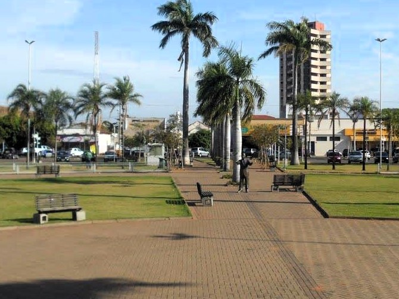

A Praça Senador Ramez Tebet é um dos principais pontos de encontro de Três Lagoas, localizada na região central da cidade. Bastante frequentada por moradores, ela se destaca pelo ambiente agradável e pela importância cultural e social. A praça possui uma boa estrutura, com áreas arborizadas, bancos para descanso e espaço para circulação, sendo ideal para caminhadas leves e momentos de lazer. Ao redor, há comércios, lanchonetes e outros estabelecimentos que tornam o local ainda mais movimentado ao longo do dia. Além disso, a Praça Senador Ramez Tebet costuma receber eventos, apresentações culturais e atividades comunitárias, o que reforça seu papel como um espaço de convivência e integração social. É comum ver famílias, jovens e idosos aproveitando o ambiente, especialmente nos períodos de maior movimento. O melhor horário para visita é à noite, quando a iluminação deixa o local mais bonito e o clima mais agradável. Nesse período, a praça ganha vida com o fluxo de pessoas, tornando-se um lugar ideal para passear, conversar e aproveitar o centro da cidade.
